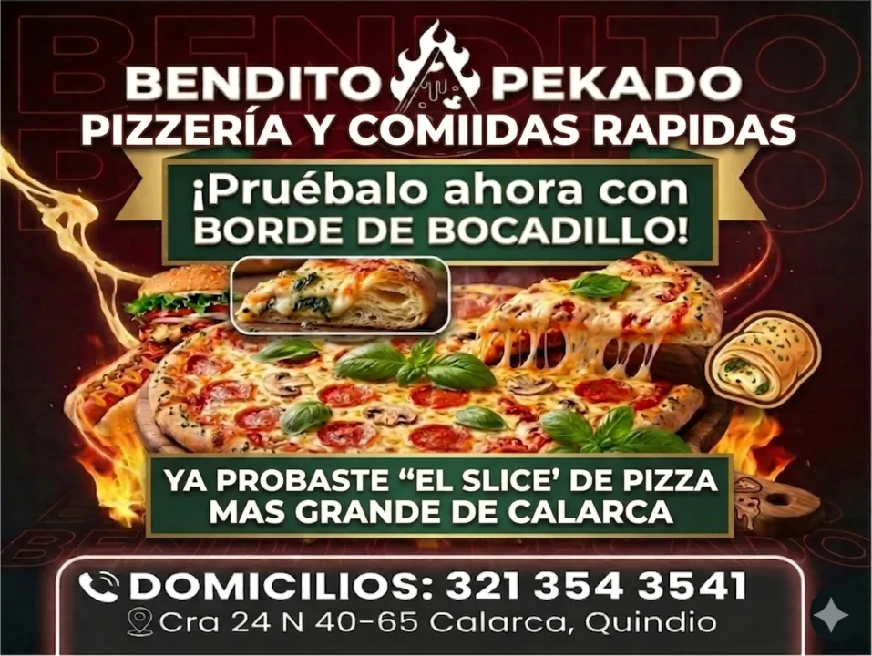
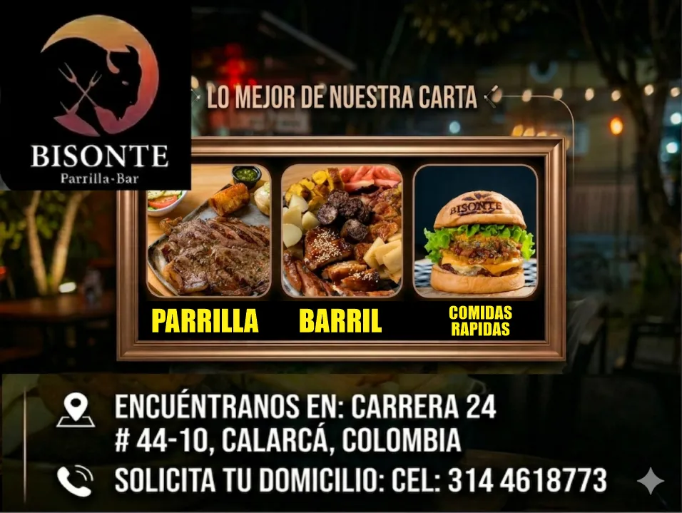
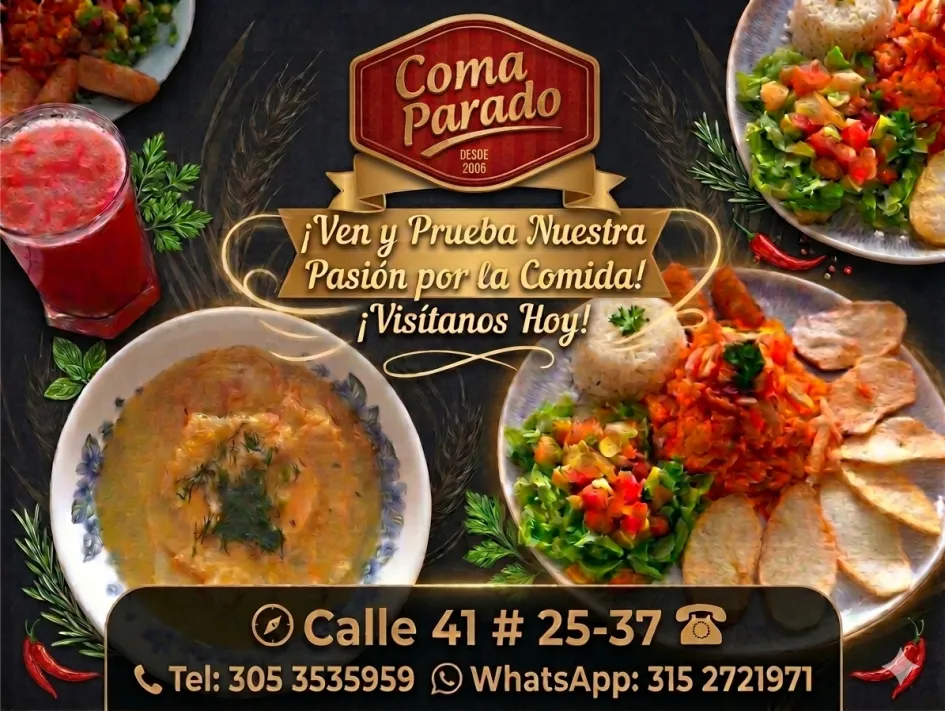
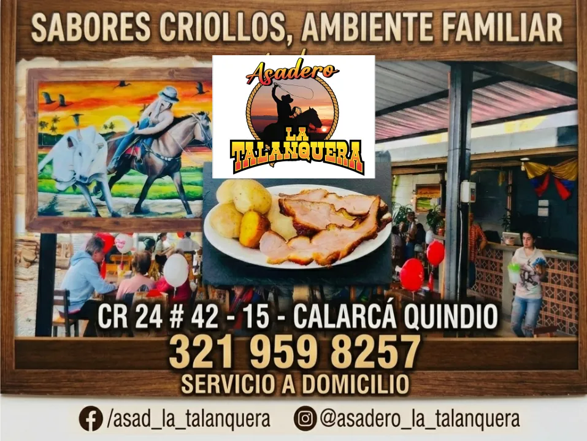
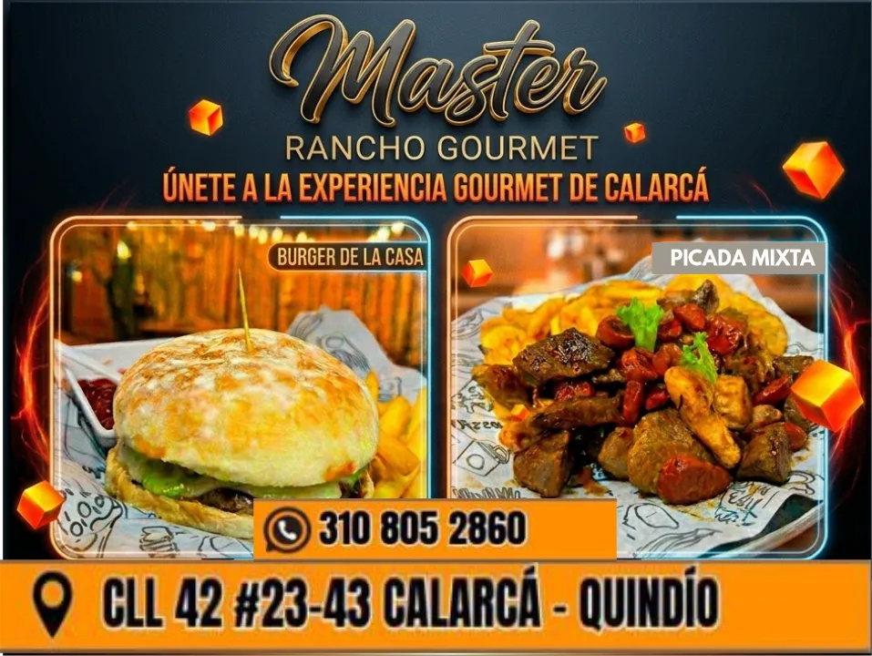

✓ VerificadoRestaurante · Calarcá, Departamento del Quindío
Bendito Pekado
Restaurante con cocina fusión y los mejores sabores del Eje Cafetero.
AlmuerzoCenaReservasEventos
💰 Menú desde $25.000
Restaurantes en Calarcá con comida típica del Quindío, internacional y fusion. Encuentra tu lugar ideal para comer.
Ciudad de las acacias, puerta al Tolima. A 8 km de Armenia, la capital del Departamento del Quindío, Colombia.
Aquí encontrarás las mejores opciones de Restaurantes para tu viaje por el Departamento del Quindío, Colombia, con información detallada, fotos reales y contacto directo por WhatsApp.

✓ VerificadoRestaurante con cocina fusión y los mejores sabores del Eje Cafetero.

✓ VerificadoLas mejores carnes a la parrilla del Quindío. Ambiente familiar y acogedor.

✓ VerificadoGastronomía típica del Quindío en un ambiente informal y delicioso.

⭐ PremiumRestaurante campestre con vista al paisaje cafetero y cocina tradicional.

⭐ PremiumAlta cocina en el corazón del Quindío. Experiencias gastronómicas únicas.
Publica tu negocio y recibe contacto directo de turistas sin comisiones.
📣 Publicar mi negocio